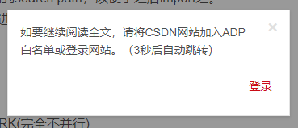
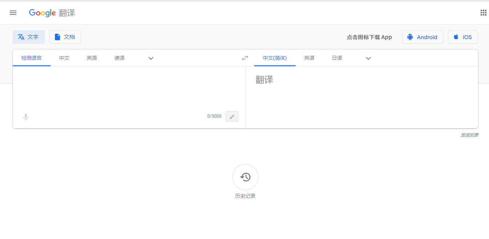
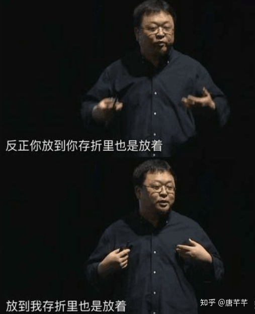

记录我过去一周看到的值得分享的东西，每周四发布。
随笔
本站为什么不使用 https
我有个短期的目标，就是用我自己写的 web 服务器来架设我的博客（现在用的是 Nginx）。
从拥有基本功能到能够支持 https 还有很长一段路，直到我能够用自己的系统支持 https，我才会将本站替换为 https。
Google 流量分析
Google 流量分析可以用来分析你的网站的用户的一些信息，可以查看当前活跃页面、流量来源、引荐、访问统计、用户画像、广告收入等。
Google 搜索分析
Google 搜索分析，可以查看你的网站在 Google 上的曝光率，用户使用的搜索词等。
还有一个附带的功能：如果你的网站一直没有被 Google 收录，那么你可以通过 Google 搜索分析主动提交网站给 Google 收录。
新闻
是的，本周的新闻就是：CSDN 药丸。
CSDN 查看全文需要登陆
从前几天开始，全国范围内大量的用户反映 CSDN 查看全文需要登陆。

现在新注册 CSDN 账号需要提供手机号等个人信息，甚至会诱导你绑定自己的微信号。
CSDN 检测广告屏蔽
CSDN 当检测到被 adblock 屏蔽时会停止服务，它使用了一段 JS 来进行判断。
这段 JS 最后一行里有这么一句：
o.src="https://g.csdnimg.cn/lib/fuckadblock/3.2.1/fuckadblock.min.js"
只能说，CSDN 的程序员已经放飞自我了。
技术杂谈
WPF 开源
拥抱开源的微软。
Google 翻译
Google 为数不多不需要翻墙的服务，前几天迎来了大更新。
现在支持文档翻译，UI 也得到了更新。

wtfpython-cn
wtfpython 的中文翻译，里面有很多 Python 容易被忽视的地方或者容易被踩的坑。
cpp-style-guide
厚颜无耻地推荐我自己的项目。
这里有一份面向初学者的代码风格指导，以及一份 VSCode C/C++ 的配置指南。
主要面向的是刚开始接触编程、刚开始在 OJ 上做题的用户，后续会添加一些在 OJ 上做题或者在 ACM 比赛中会使用到的技巧。
表情包
好像没有什么不对的
